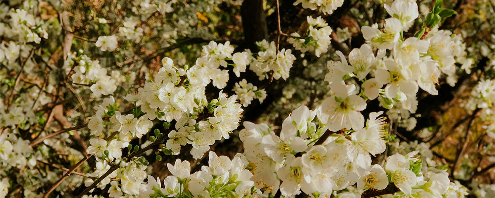
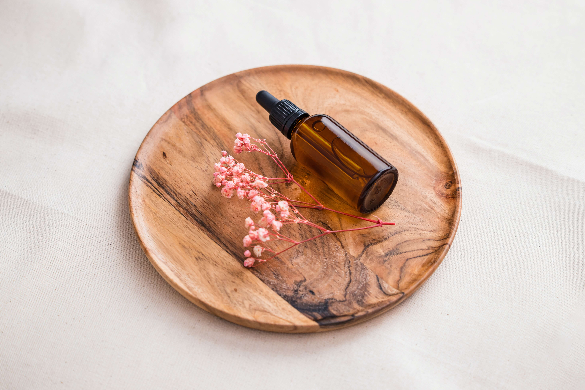

Sobre las Flores
Las Flores de Bach son una terapia natural y armoniosa que ofrece una valiosa ayuda
para abordar los desequilibrios emocionales y mejorar el bienestar emocional en las personas.
Creadas por el Dr. Edward Bach, estas esencias florales tienen como objetivo
equilibrar y armonizar las
emociones negativas que
pueden afectar nuestra salud física y mental.

Él estudió la enfermedad observando la forma en que cada
paciente reaccionaba a las características de
una enfermedad (duración, gravedad, etc.). Concluyó que el
mismo remedio no siempre curaba la misma
enfermedad en todos los pacientes y que, al tratar una
enfermedad, la personalidad del paciente era más
importante que el cuerpo.
Asimismo observaba que muchas veces el proceso de
restablecimiento de salud era casi mas doloroso que la
propia enfermedad, y horrorizado ante esta situación, pensó
que la auténtica curación debía ser
suave,
indolora y benigna. Bajo estas premisas, comenzaron
sus investigaciones para crear nuevos
medicamentos,
que reemplacen las bacterias (de las vacunas tradicionales)
por remedios mas puros, del mundo natural
(hierbas, flores y plantas). Su intuición lo lleva a
experimentar con flores, en Gales, a finales de
septiembre de 1928.
Experimentando descubrió los dos grandes metodos de
preparación de las esencias florales: solarización y
ebullición. Así nacieron los
primeros ejemplares de sus goteros, tan simples, naturales y
sencillos y aun así tan increíblemente
poderosos, ya que contenían el patrón vibracional de cada
planta.
Las Flores de Bach no tratan enfermedades como tales,
sino que se enfocan en restaurar el equilibrio
emocional, abordando las raíces emocionales de los
desequilibrios para promover la armonía y el
bienestar
integral. De esta manera sostenía el Dr. Bach que el
cuerpo podía retornar al estado de salud.
Cada flor de Bach se asocia con una emoción específica, como
el miedo, la ansiedad, la tristeza, la ira o
la
indecisión. Al identificar las emociones que están
desequilibradas, se pueden seleccionar las esencias
florales adecuadas para restaurar el equilibrio emocional y
promover una sensación de bienestar
interior.
Para una compresión más sencilla, el Dr. Bach las
dividió en 7 arts emocionales.
Un apartado aparte merece su popular compuesto: Rescue
Remedy
Miedo
Este grupo incluye flores para abordar miedos de
distintas clases:
- Mimulus: Para miedos conocidos y definidos.
- Rock Rose: Para miedos extremos y pánico.
- Cherry Plum: Para el miedo a perder el control o a
estallar emocionalmente.
- Aspen: Para miedos desconocidos y presentimientos.
- Red Chestnut: Para el miedo por el bienestar de los
demás.
Incertidumbre
Este grupo abarca flores para situaciones de
incertidumbre, indecisión o falta de confianza en la
toma de
decisiones.
- Cerato: Para aquellos que dudan de su juicio y
buscan constantemente la opinión de los demás.
- Scleranthus: Para dificultad en tomar decisiones y
cambiar de opinión con facilidad.
- Gentian: Para la desmotivación y falta de fe después
de un contratiempo.
- Gorse: Para la sensación de desesperanza y
pesimismo.
- Hornbeam: Para el cansancio mental y la falta de
energía para enfrentar el día.
- Wild Oat: Para la insatisfacción y la falta de
dirección en la vida. Duda vocacional.
Falta de interés en el presente
Estas flores se usan para aquellos que se sienten
abrumados por el pasado o preocupados por el
futuro,
perdiendo la conexión con el presente.
- Clematis: Para aquellos que tienden a soñar
despiertos y tienen dificultad para mantenerse
enfocados
en el presente.
- Honeysuckle: Para nostalgia y apego excesivo al
pasado.
- Wild Rose: Para falta de entusiasmo y resignación
ante las circunstancias.
- Olive: Para el agotamiento físico y mental.
- White Chestnut: Para la mente inquieta y
pensamientos repetitivos.
- Mustard: Para la tristeza y melancolía sin motivo
aparente.
- Chestnut Bud: Para aprender de las experiencias y no
repetir errores.
Soledad
Este grupo abarca flores para situaciones de soledad, el
aislamiento y la dificultad para conectarse
emocionalmente con los demás.
- Water Violet: Para aquellos que prefieren la soledad
y son reservados.
- Impatiens: Para impaciencia y frustración con la
lentitud de los demás.
- Heather: Para aquellos que buscan atención
constantemente y tienen dificultad para escuchar a
los
demás.
Sensibilidad excesiva a las influencias y opiniones
Estas flores se usan para personas altamente sensibles a
las opiniones de los demás, que fácilmente
se
ven influenciadas.
- Agrimony: Para aquellos que esconden sus verdaderos
sentimientos detrás de una apariencia
alegre.
- Centuary: Para aquellos que tienen dificultad para
decir "no" y establecer límites.
- Walnut: Para la protección contra influencias
externas y cambios importantes.
- Holly: Para la ira, los celos y los sentimientos
negativos hacia los demás.
Desaliento o desesperación
Este grupo abarca flores para momentos de desesperación,
desaliento o desesperanza.
- Larch: Para falta de confianza y miedo al fracaso.
- Pine: Para sentimientos de culpa y autorreproche.
- Elm: Para sensación de abrumarse por las
responsabilidades.
- Sweet Chestnut: Para angustia mental extrema y
sensación de desamparo.
- Star of Bethlehem: Para shock emocional y trauma.
- Willow: Para resentimiento y autocompasión.
- Oak: Para fortaleza en la adversidad y
perseverancia.
- Crab Apple: Para aceptación y purificación interior.
Preocupación excesiva por el bienestar de los demás
Este grupo se centra en flores para aquellos que se
preocupan excesivamente por el bienestar de los
demás, descuidando sus propias necesidades.
- Chicory: Para actitud posesiva y manipuladora hacia
los demás.
- Vervain: Para intensidad excesiva y tensión mental.
- Vine: Para tendencia dominante y autoritaria.
- Beech: Para intolerancia y crítica hacia los demás.
- Rock Water: Para autoexigencia y rigidez en los
principios.
Rescue Remedy

El Rescue Remedy, también conocido como Remedio de
Rescate, es una mezcla de cinco esencias
florales
de Bach diseñada para ayudar a manejar situaciones
específicas de emergencia, estrés y crisis
emocionales en momentos difíciles.
Este remedio floral es ampliamente utilizado en
situaciones de estrés, ansiedad, nerviosismo,
exámenes, situaciones traumáticas, miedos intensos,
accidentes, entrevistas, pre operatorios y
otras
situaciones emocionalmente desafiantes. Además, es útil
para aliviar la tensión en situaciones
cotidianas como discusiones, cambios laborales o
escolares, viajes, presentaciones y cualquier
otra
situación que genere emociones intensas.
En el caso de mascotas, es de gran ayuda en casos de
visitas al veterinario, pre y y post
operatorios, cambios de hogar, fuegos artificiales,
viajes, entre otros.
Funciona como estabilizador para el caso puntual, pero no
es un tratamiento de base, es decir que
no
logra los efectos de tratar el carácter emocional. Por
eso es necesario, una vez salidos de la
situacion de emergencia, realizar un tratamiento con las
flores adecuadas para equlibrar los
patrones conductuales de base y así lograr efectos
duraderos.
El Rescue Remedy está compuesto por las siguientes
flores:
- Star of Bethlehem: Para shock emocional y trauma.
- Rock Rose: Para pánico y terror.
- Impatiens: Para impaciencia y frustración con la
lentitud de los demás.
- Cherry Plum: Para miedo a perder el control o a
estallar emocionalmente.
- Clematis: Para aquellos que tienden a soñar
despiertos y tienen dificultad para mantenerse
enfocados en el presente.